Contents
# basics
import os, copy
from glob import glob
from progressbar import progressbar
# arrays
import numpy as np
import pandas as pd
import xarray as xr
# plotting
import matplotlib.pyplot as plt
import cartopy.crs as ccrs
# math and dates
from scipy import optimize
from scipy.signal import find_peaks
from datetime import date, datetime, timedelta
%matplotlib inline
# open moana dataset (30h cut-off) with skew surge on it
data = xr.open_zarr(
'../Documents/geocean-nz-ss/data/storm_surge_data/moana_hindcast_v2/moana_coast_30h_skew_surge.zarr/')
data
<xarray.Dataset>
Dimensions: (site: 1448, time: 209736)
Coordinates:
* site (site) int64 0 1 2 3 4 5 ... 1443 1444 1445 1446 1447
* time (time) datetime64[ns] 1994-01-17 ... 2017-12-09
Data variables:
elev (site, time) float32 dask.array<chunksize=(1, 104868), meta=np.ndarray>
lat (site) float64 dask.array<chunksize=(1,), meta=np.ndarray>
lon (site) float64 dask.array<chunksize=(1,), meta=np.ndarray>
msea (site, time) float32 dask.array<chunksize=(1, 104868), meta=np.ndarray>
res (site, time) float32 dask.array<chunksize=(1, 104868), meta=np.ndarray>
skew_surge_lag (site, time) timedelta64[ns] dask.array<chunksize=(1, 104868), meta=np.ndarray>
skew_surge_magnitude (site, time) float32 dask.array<chunksize=(1, 104868), meta=np.ndarray>
ss (site, time) float32 dask.array<chunksize=(1, 104868), meta=np.ndarray>
tide (site, time) float32 dask.array<chunksize=(1, 104868), meta=np.ndarray>
trend (site, time) float32 dask.array<chunksize=(1, 104868), meta=np.ndarray>javi_points = np.unique( # closest Moana v2 Hindcast to tidal gauges
sorted(
[
689,328,393,1327,393,480,999,116,224,1124,949,708, # UHSLC
1296,378,1124,780,613,488,1442,1217,578,200,1177,1025,689,949,224,1146, # LINZ
1174,1260,1217,744,1064,1214,803,999 # OTHER (ports...)
]
)
)
def plot_sites_comparisons(data_in, sites_id, variables_x, variables_y,
variables_hue=None, ss_threshold=None):
data_plot = data_in.sel(site=sites_id).load().copy()
if ss_threshold:
data_plot = data_plot.where(
data_plot.ss>data_plot.ss.quantile(ss_threshold,dim='time')).copy()
if variables_hue is None:
variables_hue = [None]*len(variables_x)
for var_x, var_y, var_hue in zip(variables_x, variables_y, variables_hue):
if '+' in var_x:
plus_pos_x = var_x.find('+')
if '+' in var_y:
plus_pos_y = var_y.find('+')
data_plot = data_plot.assign({
var_x: data_plot[var_x[:plus_pos_x-1]]+data_plot[var_x[plus_pos_x+2:]],
var_y: data_plot[var_y[:plus_pos_y-1]]+data_plot[var_y[plus_pos_y+2:]]
})
else:
data_plot = data_plot.assign({
var_x: data_plot[var_x[:plus_pos_x-1]]+data_plot[var_x[plus_pos_x+2:]]
})
else:
if '+' in var_y:
plus_pos_y = var_y.find('+')
data_plot = data_plot.assign({
var_y: data_plot[var_y[:plus_pos_y-1]]+data_plot[var_y[plus_pos_y+2:]]
})
data_plot.plot.scatter(x=var_x,y=var_y,hue=var_hue,col='site',s=1,c='k')
# plot hist of skew surge lags
# properly make a scatter plot with ss and res + skew surge
data_plot = data_plot.assign({
'ss + res': data_plot['ss']+data_plot['res']
})
p1 = data_plot.plot.scatter(x='ss',y='skew_surge_magnitude',hue='tide',col='site',s=1)
p2 = data_plot.plot.scatter(x='ss + res',y='skew_surge_magnitude',hue='tide',col='site',s=1)
for ax1,ax2 in zip(p1.axes.flat,p2.axes.flat):
ax1.plot([-0.4,0.6],[-0.4,0.6],c='k',ls='--')
ax2.plot([-0.4,0.6],[-0.4,0.6],c='k',ls='--')
# plot example of function above
plot_sites_comparisons(
data,javi_points[::7],['ss','ss + res'],['tide','tide'],ss_threshold=0.98)
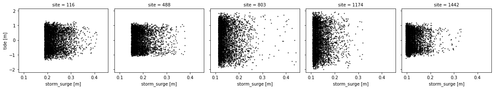
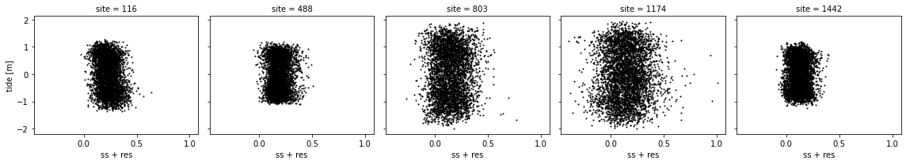
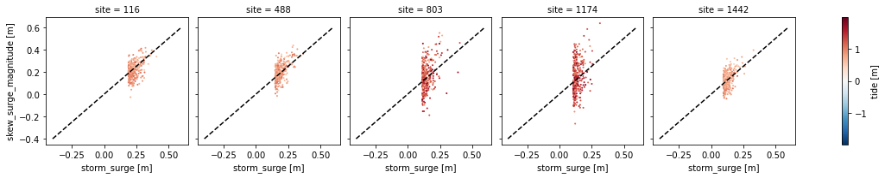
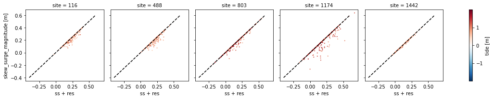
# here we look at the correlation between the skew surge and the storm surge
data = data.assign({
'corr_ss_skew_surge': (('site'),xr.corr(data.ss,data.skew_surge_magnitude,dim='time').values)
})
data.plot.scatter(x='lon',y='lat',hue='corr_ss_skew_surge',s=1)
<matplotlib.collections.PathCollection at 0x7f847d68acd0>
data.where(data.corr_ss_skew_surge<0.6).plot.scatter(x='lon',y='lat',hue='corr_ss_skew_surge',s=1)
<matplotlib.collections.PathCollection at 0x7f8477ff4cd0>
bad_corr_sites = data.where(data.corr_ss_skew_surge<0.4).corr_ss_skew_surge\
.dropna(dim='site').site.values[::10]
bad_corr_sites
array([ 706, 1174, 1195, 1219])
plot_sites_comparisons(
data,bad_corr_sites,['ss','ss + res'],['tide','tide'],ss_threshold=0.99)
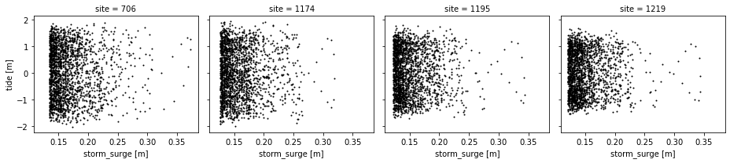
 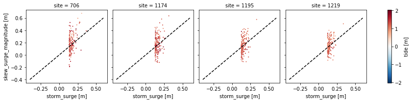
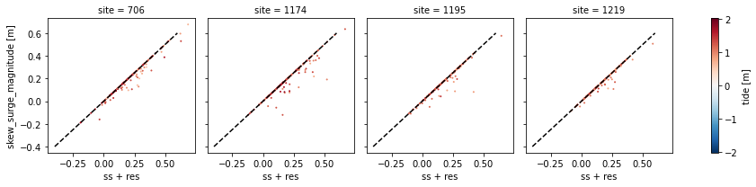
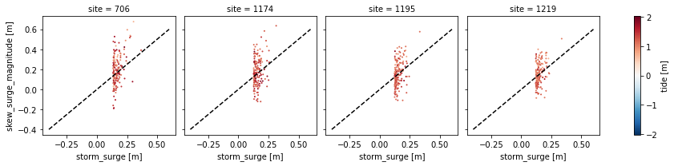
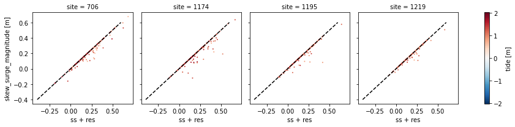
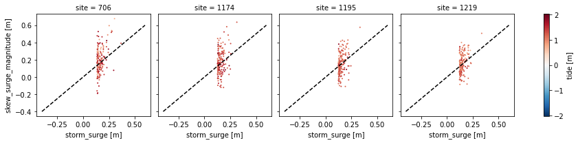
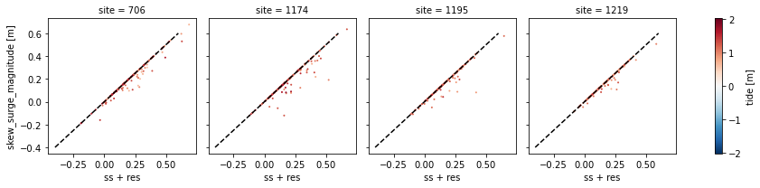
datasub = data.sel(site=bad_corr_sites,time=slice(datetime(1995,1,1),datetime(1995,1,15))).load()
fig, axes = plt.subplots(nrows=len(datasub.site.values),
figsize=(20,len(datasub.site.values)*6))
for ax,site in zip(axes,datasub.site.values):
datasub.sel(site=site).elev.plot(ax=ax,label='elev')
datasub.sel(site=site).tide.plot(ax=ax,label='tide')
datasub.sel(site=site).ss.plot(ax=ax,label='ss')
ax.plot(datasub.sel(site=site).skew_surge_magnitude.dropna(dim='time').time,
datasub.sel(site=site).skew_surge_magnitude.squeeze().dropna(dim='time'),'o',label='skew surge')
ax.legend()
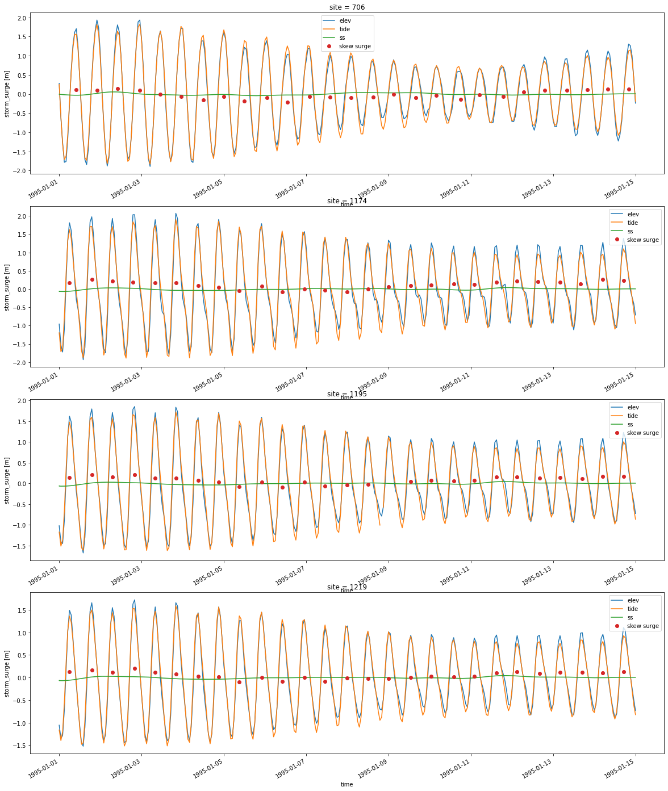
def cosine(t, amplitude, period, phase, offset):
return amplitude*np.cos(2*np.pi*(t/period)+phase) + offset
lags = {}
for site_id in bad_corr_sites:
site_data = data.sel(site=site_id)
tide = site_data.tide.drop_duplicates(dim='time').squeeze().dropna(dim='time')
elev = site_data.elev.drop_duplicates(dim='time').squeeze().dropna(dim='time')
skew_surge = site_data.skew_surge_magnitude.drop_duplicates(dim='time')
# Define threshold for skew surge extremes
skew_surge_threshold = skew_surge.chunk(dict(time=-1)).quantile(0.995).values
time_index = np.intersect1d(
pd.to_datetime(tide.time).round('H'),
pd.to_datetime(elev.time).round('H'),
return_indices=True
)[0]
tide = tide.sel(time=time_index)
elev = elev.sel(time=time_index)
skew_surge = skew_surge.sel(time=time_index)
lags[site_id] = {}
lags[site_id]['lag'] = []
lags[site_id]['pelev'] = []
lags[site_id]['ptide'] = []
lags[site_id]['it0'] = []
lags[site_id]['it1'] = []
# Find all the troughs in the tidal curves to identify tidal cycles
troughs = find_peaks(-tide.values)[0]
# Loop over tidal cycles
for it0,it1 in progressbar(zip(troughs[:-1],troughs[1:])):
# Extend a little the data
it1 = min(it1+6, len(tide.values)-1)
# Discard all cases when only nan value of skew surge are available
if np.isnan(skew_surge[it0:it1].values).all():
continue
# If the skew surge in the tidal cycle is lower than threshold jump to next cycle
if np.nanmax(skew_surge[it0:it1].values) < skew_surge_threshold:
continue
# If the gap between two consecutive low tides is more than a day, then jump to next cycle
if (tide.time[it1]-tide.time[it0]).values > np.timedelta64(1,'D') or \
(tide.time[it0]-tide.time[it1]).values > np.timedelta64(1,'D'):
print("More than a day!")
continue
# Fit cosine curve to elevation data
bounds=([elev[it0:it1].max().values-0.2, 10, 4, -0.5],
[elev[it0:it1].max().values+0.2, 14, 8, 0.5])
pelev, covariance = optimize.curve_fit(cosine, range(len(elev[it0:it1])),
elev[it0:it1].values, bounds=bounds)
# Fit cosine curve to tide data
bounds=([tide[it0:it1].max().values-0.2, 10, 4, -0.5],
[tide[it0:it1].max().values+0.2, 14, 8, 0.5])
ptide, covariance = optimize.curve_fit(cosine, range(len(tide.time[it0:it1])),
tide[it0:it1].values, bounds=bounds)
# Store the lag divided by the tide duration
lags[site_id]['lag'].append(pelev[1]-ptide[1])
lags[site_id]['pelev'].append(pelev)
lags[site_id]['ptide'].append(ptide)
lags[site_id]['it0'].append(it0)
lags[site_id]['it1'].append(it1)
| | # | 16825 Elapsed Time: 0:03:10
| | # | 10896 Elapsed Time: 0:02:05
---------------------------------------------------------------------------
KeyboardInterrupt Traceback (most recent call last)
/var/folders/24/g13dzqsd2c56y95zxrf_ytbc0000gn/T/ipykernel_91766/3490659672.py in <module>
39
40 # Extend a little the data
---> 41 it1 = min(it1+6, len(tide.values)-1)
42
43 # Discard all cases when only nan value of skew surge are available
/opt/miniconda3/envs/winds/lib/python3.8/site-packages/xarray/core/dataarray.py in values(self)
644 type does not support coercion like this (e.g. cupy).
645 """
--> 646 return self.variable.values
647
648 @values.setter
/opt/miniconda3/envs/winds/lib/python3.8/site-packages/xarray/core/variable.py in values(self)
517 def values(self):
518 """The variable's data as a numpy.ndarray"""
--> 519 return _as_array_or_item(self._data)
520
521 @values.setter
/opt/miniconda3/envs/winds/lib/python3.8/site-packages/xarray/core/variable.py in _as_array_or_item(data)
257 TODO: remove this (replace with np.asarray) once these issues are fixed
258 """
--> 259 data = np.asarray(data)
260 if data.ndim == 0:
261 if data.dtype.kind == "M":
/opt/miniconda3/envs/winds/lib/python3.8/site-packages/dask/array/core.py in __array__(self, dtype, **kwargs)
1579
1580 def __array__(self, dtype=None, **kwargs):
-> 1581 x = self.compute()
1582 if dtype and x.dtype != dtype:
1583 x = x.astype(dtype)
/opt/miniconda3/envs/winds/lib/python3.8/site-packages/dask/base.py in compute(self, **kwargs)
286 dask.base.compute
287 """
--> 288 (result,) = compute(self, traverse=False, **kwargs)
289 return result
290
/opt/miniconda3/envs/winds/lib/python3.8/site-packages/dask/base.py in compute(traverse, optimize_graph, scheduler, get, *args, **kwargs)
569 postcomputes.append(x.__dask_postcompute__())
570
--> 571 results = schedule(dsk, keys, **kwargs)
572 return repack([f(r, *a) for r, (f, a) in zip(results, postcomputes)])
573
/opt/miniconda3/envs/winds/lib/python3.8/site-packages/dask/threaded.py in get(dsk, result, cache, num_workers, pool, **kwargs)
77 pool = MultiprocessingPoolExecutor(pool)
78
---> 79 results = get_async(
80 pool.submit,
81 pool._max_workers,
/opt/miniconda3/envs/winds/lib/python3.8/site-packages/dask/local.py in get_async(submit, num_workers, dsk, result, cache, get_id, rerun_exceptions_locally, pack_exception, raise_exception, callbacks, dumps, loads, chunksize, **kwargs)
432 started_cbs.append(cb)
433
--> 434 keyorder = order(dsk)
435
436 state = start_state_from_dask(dsk, cache=cache, sortkey=keyorder.get)
/opt/miniconda3/envs/winds/lib/python3.8/site-packages/dask/order.py in order(dsk, dependencies)
110
111 if dependencies is None:
--> 112 dependencies = {k: get_dependencies(dsk, k) for k in dsk}
113
114 dependents = reverse_dict(dependencies)
/opt/miniconda3/envs/winds/lib/python3.8/site-packages/dask/order.py in <dictcomp>(.0)
110
111 if dependencies is None:
--> 112 dependencies = {k: get_dependencies(dsk, k) for k in dsk}
113
114 dependents = reverse_dict(dependencies)
/opt/miniconda3/envs/winds/lib/python3.8/site-packages/dask/core.py in get_dependencies(dsk, key, task, as_list)
248 """
249 if key is not None:
--> 250 arg = dsk[key]
251 elif task is not no_default:
252 arg = task
KeyboardInterrupt:
plt.hist(lags[706]['lag'],bins=10)
(array([ 4., 0., 0., 0., 10., 72., 0., 0., 0., 1.]),
array([-3.66502437, -2.93368456, -2.20234475, -1.47100494, -0.73966513,
-0.00832532, 0.72301449, 1.4543543 , 2.18569411, 2.91703392,
3.64837373]),
<BarContainer object of 10 artists>)